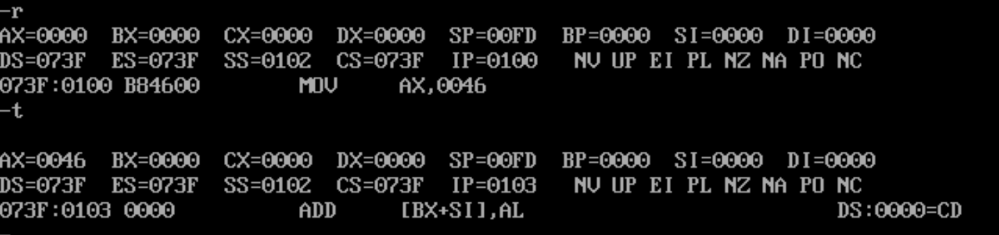

什么是 re
逆向只是个开始，而不是结束
Reverse Engineering：逆向工程，是一种技术过程，即对一专案标产品进行逆向分析及研究，从而演绎并得出该产品的处理流程、组织结构、功能效能规格等设计要素，以制作出功能相近，但又不完全一样的产品。逆向工程源于商业及军事领域中的硬体分析。其主要目的是，在无法轻易获得必要的生产资讯下，直接从成品的分析，推导产品的设计原理。
简单来说就是通过一个可执行文件反向推导出它的代码是怎么写的。
基础知识
CPU架构
什么是 CPU 架构：CPU厂商给属于同一系列的CPU产品定的一个规范，主要目的是为了区分不同类型CPU的重要标示。
常见的 CPU 架构：X86、ARM、MIPS、IA64。
从基本的逻辑角度分类可以被分为 ”复杂指令集“ 与 ”精简指令集“ 系统，分别对应的是 ”CISC(Complex instruction set computer)“ 和 ”RISC(Reduced instruction set computer)“。
Intel和ARM处理器的第一个区别是，前者使用复杂指令集（CISC)，而后者使用精简指令集（RISC）。
指令集决定了 CPU 的架构，复杂指令集对应 CPU 比较复杂，这就意味着你可以用简单的逻辑语言让计算机实现你所想达到的功能；而精简指令集就恰好相反，它对应的 CPU 相对更简单，所以你需要用复杂的逻辑语言才能让计算机实现你所想达到的功能。
而使它们之间产生巨大区别的原因在于它们的设计者所考虑问题方式的不同
比如说我们要命令一个人吃饭，那么我们应该怎么命令呢？我们可以直接对他下达“吃饭”的命令，也可以命令他“先拿勺子，然后舀起一勺饭，然后张嘴，然后送到嘴里，最后咽下去”。
复杂指令集的设计者就认为，如果我首先给接受命令的人以足够的训练，让他掌握各种复杂技能（即在硬件中实现对应的复杂功能），那么以后就可以用非常简单的命令让他去做很复杂的事情——比如只要说一句“吃饭”，他就会吃饭。
精简指令集的设计者认为，我们可以把事情分为许多非常基本的步骤，让接受命令的人懂得这些基本步骤，然后通过较为复杂的指令也能完成相同的工作，无非就是下达指令的人稍微累一点。
总线
总线：是是指计算机组件间规范化的交换数据（data）的方式，即以一种通用的方式为各组件提供数据传送和控制逻辑。
简单来说，总线是计算机硬件设备之间用来通信的
总线是单向的 例如：不能同时进行读取和写入的操作
总线分类：
- 数据总线（Data Bus）：在CPU与RAM之间来回传送需要处理或是需要储存的数据。总线是宽度决定了 CPU 与其它器件进行数据传送时一次数据的传送量
- 地址总线（Address Bus）：用来指定在RAM（Random Access Memory）之中储存的数据的地址。总线宽度决定了 CPU 的寻址能力
- 控制总线（Control Bus）：将微处理器控制单元（Control Unit）的信号，传送到周边设备，一般常见的为USB Bus和1394 Bus。总线宽度决定了 CPU 对系统中其它器件的控制能力。
编译过程
-
预编译（Preprocessing）又称为预处理，做代码文本的替换工作，处理#开头的指令，比如拷贝#include包含的文件代码，#define宏定义的替换，条件编译等，为下一步的编译做好预备工作。
-
编译（Compilation）将程序语言转换成汇编语言的过程
-
汇编（Assembly）将汇编语言转换成计算机能够看懂的机器语言
-
链接（Linking）静态链接方式：在程序执行之前完成所有的组装工作，生成一个可执行的目标文件（EXE文件）。
动态链接方式：在程序已经为了执行被装入内存之后完成链接工作，并且在内存中一般只保留该编译单元的一份拷贝。
寄存器
CPU 只负责计算，而寄存器就是 CPU 中可以存储数据的器件，用来暂时存放参与运算的数据和运算结果以及一些CPU运行需要的信息。
寄存器有许多分类(以下为 x86)
- 通用寄存器
- 标志寄存器
- 指令寄存器
- 段寄存器
- 控制寄存器
- 调试寄存器
- 描述符寄存器
- 任务寄存器
- MSR寄存器
不同种类的寄存器，有不同的功能作用，它们也有自己的代号，例如：ax、bx
存储器
CPU 可以直接使用的信息在存储器中存放，CPU 想要进行数据的读写必须和外部器件进行三类信息的交互
- 存储单元的地址(地址信息)
- 器件的选择，读或写命令(控制信息)
- 读或写的数据(数据信息)
在存储器中指令和数据是没有区别的，它们都是二进制信息，存储器依靠传输二进制信息所使用的总线类型来进行判断是指令还是数据。
一个存储单元可以存储8个 bit
汇编语言基础指令
| 汇编指令示例 | 实际作用 | 等价代码 |
|---|---|---|
| mov rax,rbx | 用于赋值 | rax=rbx |
| add/sub rax,rbx | 用于加/减法 | rax+=rbx/rax-=rbx |
| and/xor/or rax,rbx | 用于与/异或/或 | rax&=rbx/rax^=rbx/rax|=rbx |
| push rax | 压栈 | rsp-=8;*rsp=rax |
| pop rax | 出栈 | rax=*rsp;rsp+=8 |
| call rax | 调用函数 | push rip;jmp rax; |
| ret | 从函数返回 | pop rip; |
| cmp rax,rbx | 比较两个数 | rax-rbx,不保留结果,只修改flags寄存器 |
| test rax,rbx | 比较两个数 | rax&rbx,不保留结果,只修改flags寄存器 |
各种跳转指令，跳转指令不同于 mov 指令，他可以用于修改段寄存器 cs、ip 的值，从而修改 CPU 在内存中所读取的内容的地址
| 汇编指令示例 | 英文 | 实际作用 |
|---|---|---|
| jmp | jump | 跳转 |
| jz | jump if zero | 为0时跳转 |
| jnz | jump if not zero | 不为0时跳转 |
| jg | jump if greater | 有符号数大于跳转 |
| jl | jump if less | 有符号数小于跳转 |
Debug 语法
以前版本的 Windows 里面自带有 debug，但是 win10 之后的更高版本取消了，我们可以通过配置 debug 文件，下载 DOSbox 来体验 debug，并通过 debug 来初体验一下汇编语言。
通过命令mount <磁盘> <debug 安装路径>挂载磁盘
输入所挂载的磁盘后即可使用 debug
常见的 debug 命令 在 debug 中不区分大小写
-
R：查看、改变 CPU 寄存器的内容
格式 -r 或 -r [][][寄存器名称] [原始值] [修改值]
查看寄存器

修改寄存器
-
D：查看内存中的内容
格式 -d 或 -d [起始地址] [结束地址/长度]
-
E：改写内存中的内容
格式 -e [起始地址] [二进制命令]
-
U：将机器指令翻译成汇编指令
格式 -u [起始地址] [结束地址/长度]
-
T：执行一条机器指令
格式 -t 或 -t [地址] [指令条数]

-
A：以汇编指令的格式向内存中存入一条机器指令
格式 -a [地址] [存放的汇编指令]
在编译、链接，生成可执行文件后，运行没有出错。而在debug时，出现“extended error 2”错误。
解决方案：添加后缀名即可
本文作者：GhDemi
本文链接： https://ghdemi.github.io/2022/05/21/%E5%88%9D%E6%8E%A2Re/
文章默认使用 CC BY-NC-SA 4.0 协议进行许可，使用时请注意遵守协议。